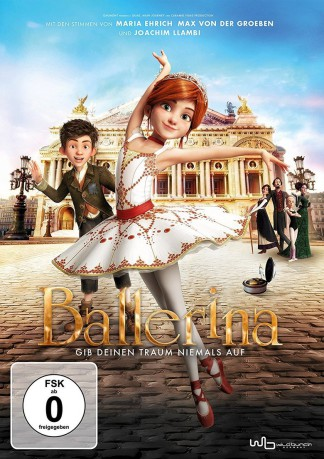

#6289 Ballerina
 gesehen am 17.06.2017
gesehen am 17.06.2017
 
 IMDB-Wertung: 6.8 / 10
IMDB-Wertung: 6.8 / 10  Tomatometer: 75
Tomatometer: 75  Metascore: 0
Metascore: 0 
Die Füße der jungen Félicie wollen einfach nicht still stehen, denn schon seit langem träumt sie von nichts anderem als einer Karriere als Tänzerin. Doch der Traum des Waisenmädchens wird von niemandem geteilt – nur der gleichaltrige Victor der als ehrgeiziger Nachwuchserfinder ebenfalls belächelt wird, glaubt an Félicie. Gemeinsam fassen sie den Entschluss, dem tristen Dasein im Waisenheim zu entfliehen und Richtung Paris zu türmen. Dort angekommen werden die beiden getrennt und Félicie ist ganz auf sich allein gestellt. Doch was sie vor Ort zu sehen bekommt bestärkt nur ihren Wunsch, einmal auf der Bühne des Pariser Opernhauses zu tanzen. Weil ein Platz in der renommierten Ausbildungsstätte aber nicht leicht zu bekommen ist, braucht Félicie nicht nur Hilfe, sondern auch einige Tricks…
Jahr: 2016
Dauer: 89 Minuten
FSK:
Land: Kanada Studio: Wild BunchTonspuren: DTS - ,
Untertitel:
Auflösung: 1080p (1920x808) Größe: 3870 MB
Genre: Komödie, Abenteuer, Animation/Trick, Familie, Musical
Regisseur: Eric Summer, Éric Warin
Drehbuch: Matthias Kutschmann
Soundtrack:
Darsteller:
 Elle Fanning als Felicie
Elle Fanning als Felicie- Dane DeHaan als Victor
- Carly Rae Jepsen als Odette
- Maddie Ziegler als Camille
- Tamir Kapelian als Rudolph / Mathurin
- Julie Khaner als Regine
- Joe Sheridan als Director of Opera
 Elana Dunkelman als Dora / Rosita
Elana Dunkelman als Dora / Rosita- Mel Brooks als
- Kate McKinnon als Regine / Mother Superior / Felicie's Mother
- Nat Wolff als Victor
- Alona Leoine als Margarette , uncredited
- Terrence Scammell als Mérante / Postman
- Shoshana Sperling als Nora
- Jamie Watson als Greasy Guard / Janitor
- Bronwen Mantel als Mother Superior
Datei: X:\Kinder Filme (A-F)\Ballerina (2016, FSK, 1920x808).mkv seit 01.06.2017
Festplatte: Kinder-Filme+Trick
 Es gibt insgesamt 68 Filme in der Gruppe 'Kinder Filme (A-F)'
Es gibt insgesamt 68 Filme in der Gruppe 'Kinder Filme (A-F)'